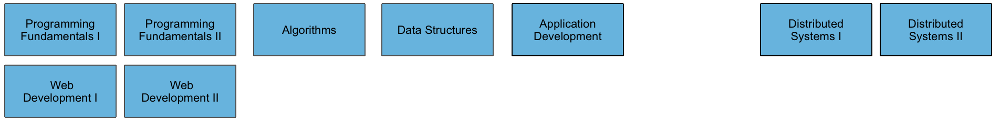
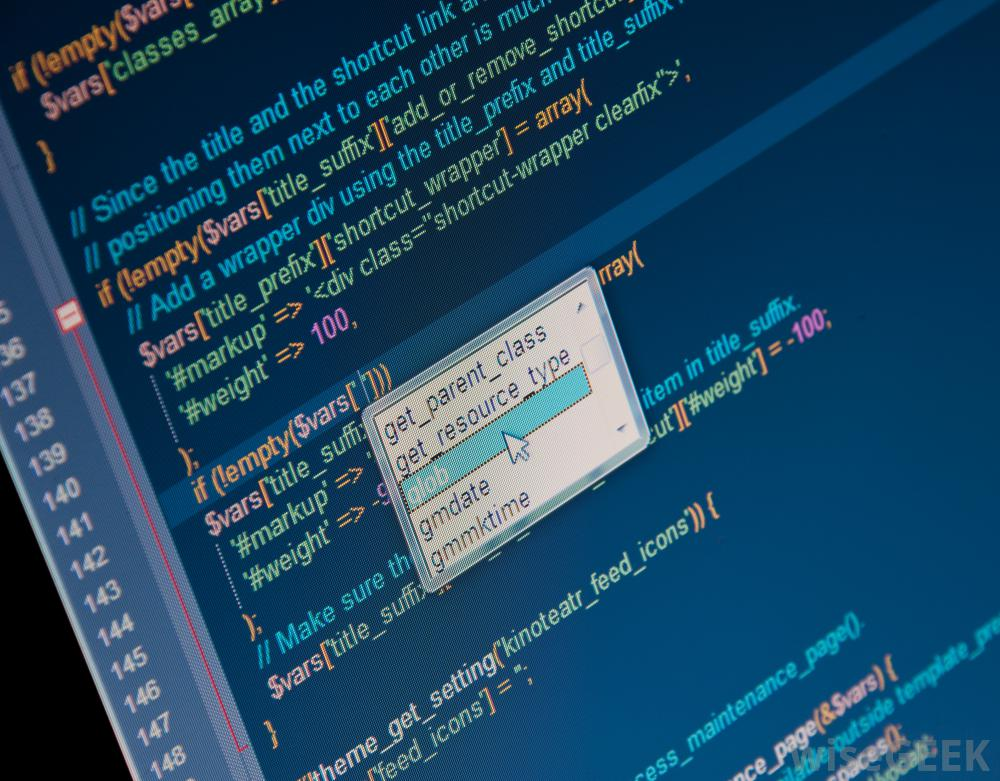

The IoT requires a new breed of software skills, with an emphasis on flexible, reactive, and highly networked applications and services. This software runs on a diverse range of systems, is frequently connected to cloud services, and may be capable of leveraging large data sets to deliver inferences and decision support in an informed manner. The software is designed and implemented using agile techniques, with an emphasis on test driven development and quality user experiences.



The Programming Stand will start with an introduction to the discipline of problem solving, establishing a firm foundation in the skill set needed for basic algorithm and data structure formation. Concurrently, students will be introduced to web technologies and be encouraged to apply their new skills to the creation of interesting web sites and applications. Second year will see the students deepen their core programming knowledge, covering the fundamental algorithms and data structures, with an emphasis on understanding the trade-offs associated with performance, efficiency and resource consumption. They will continue to implement interesting applications, with a focus on cloud hosted web services. By third year they will have the competence to take on a major application platform with an in depth module on modern App development. In final year they will return to the Web Technologies, but this time with a more sophisticated tool set and deeper understanding of the issues. This will culminate in an exploration of emerging IoT platforms, their characteristics and likely trajectories.